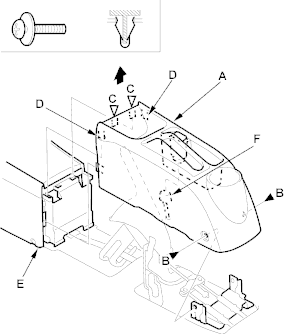
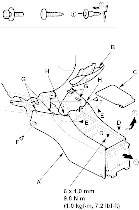

NOTE: Take care not to scratch the front seat, dashboard and related parts.
- Remove the front console (A).
- Slide the front seat forward fully on each side.
- Remove the screws (B) from the rear portion of the rear console.
- Slide the front seat rearward fully on each side.
- Pull the front position of the rear console up to detach the clips (C) and hooks (D), then release the rear console from the front console (E).
- If equipped, disconnect the seat heater switch connector (F).
- Starting at the rear, pull the rear console up, then remove it.
Fastener Locations
B  : Screw, 2 C
: Screw, 2 C  : Clip, 2
: Clip, 2

- Remove the rear console (A).
- Remove the ashtray (B).
- Remove the console box mat (C).
- Remove the bolts (D), screws (E) and clips (F).
- Gently pull out the rear console to release the hooks (G) and pins (H).
Fastener Location
D : Bolt, 2 E : Screw, 2 F : Clip, 2

- Install the console in the reverse order of removal and note these items:
- Replace any damaged clips.
- Make sure the seat heater switch connector is plugged in properly (for some models).